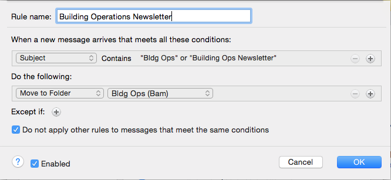
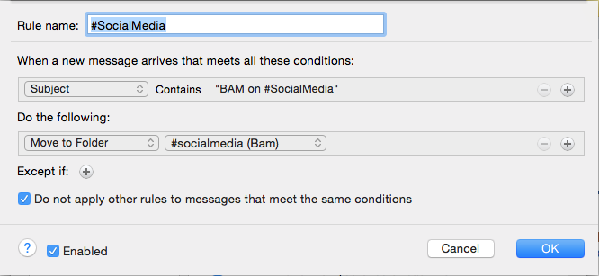

How to create a rule
- Right Click on folder to apply new or existing rule.
- Hover over 'Apply Rule'
- Select 'Create Rule'
- Enter a unique name.
- Define criteria.
- Choose how to handle the message type, such as 'Move to Folder,' 'Delete,' 'Copy to Folder.'
('Copy to Folder' will send a message to your inbox and the designated folder).
Sample Rules
Building Operations Newsletters:
Social Media Updates:
Yammer Notifications:

Suggested Rules
Consider adding rules to the following routine mail at BAM:
BAM Board News
BAM in Social Media
BAM in the News
BAM Membership Department
BAM... and then you read this
Building Operations Newsletter
Dance Motion USA Newsletter
Yammer Updates
Marketing Mail:
BAM
BAM Artist Circle
BAM Cinematek
BAM Education
BAM Kids
BAM Membership
BAM Patrons
BAM Thanks for Coming
BAM This Week
BAM Your Visit